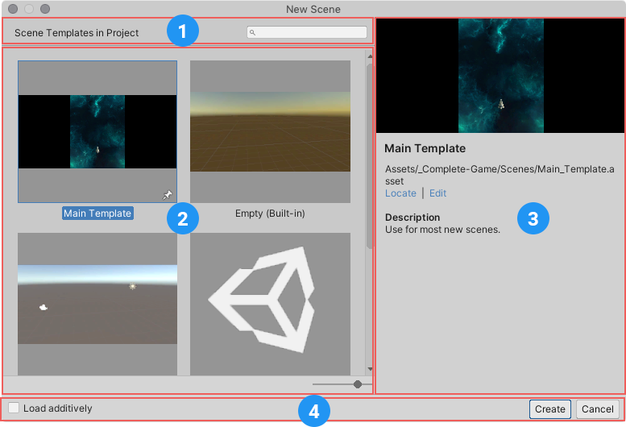

Scenes
Scenes are where you work with content in Unity. They are assets that contain all or part of a game or application. For example, you might build a simple game in a single scene, while for a more complex game, you might use one scene per level, each with its own environments, characters, obstacles, decorations, and UI(User Interface) Allows a user to interact with your application. Unity currently supports three UI systems. More info
See in Glossary. You can create any number of scenes in a project.
When you create a new project and open it for the first time, Unity opens a sample scene that contains only a CameraA component which creates an image of a particular viewpoint in your scene. The output is either drawn to the screen or captured as a texture. More info
See in Glossary and a Light.
For information about working with scenes, see Creating, loading, and saving scenes.
Scene Templates
Unity uses scene templates to create new scenes. Scene templates are assets that are stored in a project. They are similar to scenes, but are designed to be copied rather than used directly.
For information about creating and using scene templates, see Scene templates.
The New Scene dialog
The New Scene dialog opens when you create a new scene from the File menu: (File > New Scene) or the Ctrl/Cmd + n shortcut. Use it to create new scenes from specific scene templates in your project, and get information about existing templates.

The New Scene dialog
- Search field: find available scene templates by name.
- Templates: a list of all available templates in the project.
- Template details: displays information about the currently selected template.
- Command bar: provides commands and options for creating a new scene from the selected template.
Creating a new scene
To create a new scene from the New Scene dialog, select a template from the templates list, and click Create. For a detailed description of creating a scene this way, see Creating a new scene from the New Scene dialog.
Pinning templates
Pinned templates appear before other templates in the New Scene dialog’s template list. The last template pinned appears at the top of the list.
Click any template’s pin icon to pin it.

You can also pin a template when you edit its properties. In the scene template InspectorA Unity window that displays information about the currently selected GameObject, asset or project settings, allowing you to inspect and edit the values. More info
See in Glossary, enable the Pin in New Scene Dialog option.
Locating and editing templates
When you select a template in the New Scene dialog, the details pane displays the path to the template (1 in the image below).
To highlight the template in the Project windowA window that shows the contents of your Assets folder (Project tab) More info
See in Glossary, select the Locate link (2 in the image below).
To open the template in an Inspector window and edit its properties, select the Edit link (3 in the image below).
Multi-scene editing
You can open multiple scenes for editing at the same time. For details, see Multi-scene editing.